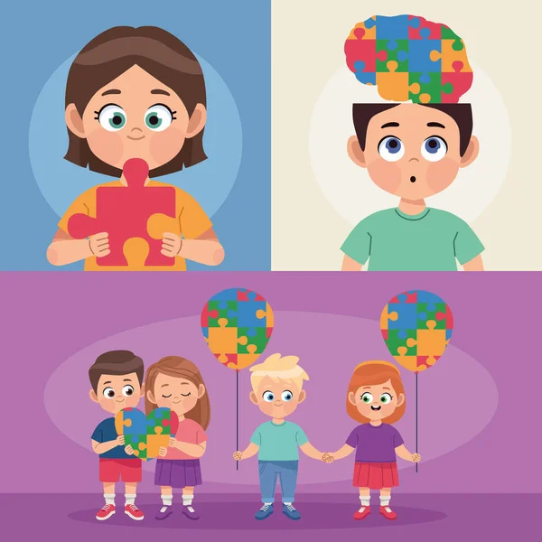

En nuestro compromiso por apoyar a niños con autismo, hemos creado esta plataforma para brindarles el apoyo necesario en su desarrollo. Tu donación puede marcar la diferencia en la vida de estos pequeños, proporcionandoles recursos y programas diseñados específicamente para sus necesidades. Cada contribución se destina a actividades terapéuticas, educativas y de inclusióon social. Si deseas hacer una donación, puedes hacerlo a través de nuestra cuenta bancaria: [Número de cuenta bancaria]. Tu generosidad nos ayudara a construir un futuro más brillante y lleno de oportunidades para estos niños.¡Gracias por tu apoyo!
